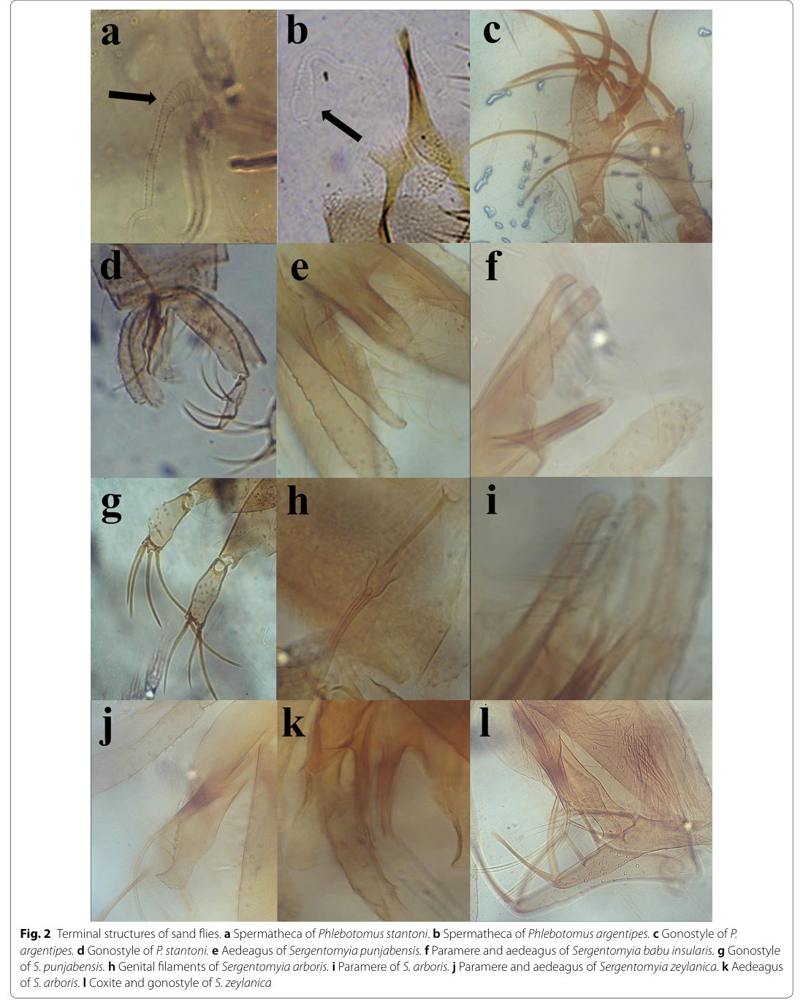

Species › Phlebotomus › Euphlebotomus
Phlebotomus argentipes
| Classification | Genus Phlebotomus, subgenus Euphlebotomus |
|---|---|
| Status | valid |
| Distribution | Records in the project regions: Bangladesh, India, Indonesia, Laos, Malaysia, Myanmar, Nepal, Pakistan, Sri Lanka, Thailand, Vietnam (Galati et al. 2025) | Bhutan: a single specimen, Kalapang (Mongar district) (Wangdi et al. 2024) | Sri Lanka: specimens referred to the University of Kelaniya in 2024 from Gampaha, Galle and Anuradhapura districts (districts per species not given), n=21 (36.2%) of 58 examined (Kumari et al. 2026) |
| Thailand | Chiang Mai (Quate 1962) | Thailand (Galati et al. 2025) | Phayao (2 females) (Polseela et al. 2024); listed in the 42-species Thai checklist (Soe et al. 2026, Table 3); with P. papatasi reported at low abundance from Saraburi, Satun, Phitsanulok, Phang Nga, Surat Thani, Trang and Phayao (Soe et al. 2026; the two species not separated by province) |
| Importance | Important vector of visceral leishmaniasis (L. donovani) in India (Lewis 1982). |
| Diagnostic notes | P. argentipes s.l. may be a complex: P. argentipes s.s., P. annandalei and P. glaucus (Wijerathna & Gunathilaka 2020; Ding et al. 2025). Asc/f2 < 0.5 in P. argentipes s.s. | Galati et al. 2025 (p. 38) use P. argentipes for all populations of the complex (incl. P. annandalei and P. glaucus, which they do not accept as valid species); populations reported from Southeast Asia as P. argentipes may represent a distinct species. | Compare P. mascomai (Thai caves): P. argentipes has ascoid formula 2/III-X; 1/XI-XV in both sexes, paramere with lateral spine and enlarged leaf-like superior clasper, genital filaments/pump about 2, spermathecae with 12-15 rings (Muller et al. 2007, Table 1). Muller et al. (2007) note that Thai P. argentipes appears cave-dwelling, feeding on bats and cattle, and that misidentifications of P. argentipes outside India occur. | Laos and other SE Asian records may be confused with Ph. mascomai; not found in the Vientiane karst survey (Vongphayloth et al. 2024). | Recorded from Laos (Luangphabang) by Quate 1962, but no Ph. argentipes was found in 2014-2024 collections; argentipes-like specimens were Ph. seowpohi. Lao and other SE Asian records need re-investigation (Vongphayloth et al. 2026). |
| Sources | Lewis 1978, Lewis 1982, Quate 1962, Wijerathna & Gunathilaka 2020, Ding et al. 2025, Galati et al. 2025, Wangdi et al. 2024, Muller et al. 2007, Polseela et al. 2024, Soe et al. 2026, Vongphayloth et al. 2024, Vongphayloth et al. 2026, Kumari et al. 2026 |
⚠ Conflicting characters
| Character | Source A | Source B | Type | Comment |
|---|---|---|---|---|
| Gonocoxite : gonostyle ratio (♂) | Wijerathna & Gunathilaka 2020: P4a: > 1.65 (P. argentipes s.s.) | Wijerathna & Gunathilaka 2020: P4b: > 1.75 (P. annandalei) | overlapping values | Both leads are 'greater than', so a ratio > 1.75 satisfies both. Kept as printed; confirm with other characters. |
| Wing index in female key | Wijerathna & Gunathilaka 2020: P4a: wing index (R2/R2+3) < 0.2 for P. glaucus | Wijerathna & Gunathilaka 2020: P5a/P5b: wing index around 2.0 | printing error | '< 0.2' is probably a misprint for '< 2.0' or similar; kept as printed. |
| Presence in Laos | Quate 1962: Recorded from Laos, Luangphabang (as cited by Vongphayloth et al. 2026) | Vongphayloth et al. 2026: Not found 2014-2024; argentipes-like specimens are Ph. seowpohi; Lao and SE Asian records need re-investigation | different interpretation | Quate's record taken from the citation in Vongphayloth et al. 2026, not re-checked in Quate 1962. |
How it keys out
The chain of characters leading to this taxon in each key (a ready-made diagnosis).
Oriental Phlebotominae: species and subspecies (Lewis 1978) – couplet 33a
- 1a Cibarial teeth absent or, if present, usually in the form of spicules and not in a definite row (Fig. 27). Pigment patch nearly always absent. Hind ends of abdominal tergites 2-6 with many erect hairs (Fig. 1), sockets as large as on 1. Style of ♂ with three to five spines (Figs 19, 25) and sometimes (some species of subgenus Idiophlebotomus) with two hairs as well ⚠
- 2b Cibarium with spicules or unarmed. Pharynx usually armed. Palp extending further than antenna 3
- 15b Coxite of ♂ without such process. Genital filaments 3-11 times as long as pump
- 24b Style with five long spines
- 30a Paramere with three lobes (two in an Iranian species). Pharynx of ♀ as in Anaphlebotomus. Spermatheca with differentiated end-segment ⚠
- 31a Female
- 32b Spermatheca distinctly segmented
- 33a Spermathecal common duct with rather thin walls. Antenna 5 without papilla ⚠
Oriental Phlebotominae: species and subspecies (Lewis 1978) – couplet 36a
- 1a Cibarial teeth absent or, if present, usually in the form of spicules and not in a definite row (Fig. 27). Pigment patch nearly always absent. Hind ends of abdominal tergites 2-6 with many erect hairs (Fig. 1), sockets as large as on 1. Style of ♂ with three to five spines (Figs 19, 25) and sometimes (some species of subgenus Idiophlebotomus) with two hairs as well ⚠
- 2b Cibarium with spicules or unarmed. Pharynx usually armed. Palp extending further than antenna 3
- 15b Coxite of ♂ without such process. Genital filaments 3-11 times as long as pump
- 24b Style with five long spines
- 30a Paramere with three lobes (two in an Iranian species). Pharynx of ♀ as in Anaphlebotomus. Spermatheca with differentiated end-segment ⚠
- 31b Male
- 35b Middle lobe of paramere thinner than main lobe
- 36a Main lobe of paramere much more than twice length of middle lobe, lower lobe narrow, depth of paramere about 0.29 of its length (measured to junction with coxite) ⚠
Indo-Chinese species (Thailand to Viet Nam) (Quate 1962) – couplet 3a
- 1a Abdominal hairs erect, sockets on tergites 2 to 6 as large as on 1; palpal segment 4 often only 1/2 length of 3; ♂ dististyle with 2 or 3 spines in center; pharynx armed apically; cibarium at most with weak and irregularly developed teeth ⚠
- 2a Male dististyle with 5 spines; ♀ with antennal segment 3 ending well before tip of proboscis
- 3a Male genitalia with 2 small lobes below larger, main lobe on paramere, and long, slender spine on each side of aedeagus; ♀ spermatheca with distal part as broad as basal; ♀ cibarium with several central teeth larger than others ⚠
Sri Lanka: females (Wijerathna & Gunathilaka 2020) – couplet P5a
- G1a Wings broader, asymmetrical along the length (Fig. 1f). Cibarium unarmed or with scattered spicules, without a pigment patch (Fig. 1d) ⚠
- P1b Head of spermatheca without a distinct neck (Figs 2b, 4a); spermatheca not spindle-shaped
- P2b Spermatheca with 15-17 segments; apical segment enlarged (Fig. 2b)
- P3b Thorax dorsum black, sides pale
- P4b Wing overlap ≥ 0.2; wing index > 0.2; ascoid : antennal flagellomere ratio < 0.5
- P5a Wing overlap = 0.2; wing index = 2.0; ascoid : antennal flagellomere ratio > 0.4 ⚠
Sri Lanka: males (Wijerathna & Gunathilaka 2020) – couplet P4a
- G1a Style with 4 or 5 spines; not all spines terminal (Fig. 1b) ⚠
- P1b Paramere without processes or with short ventral processes; style long or short, with long spines (Fig. 2c, d)
- P2b Parameres with 2 ventral processes; style with 5 spines, rarely 6 spines (Fig. 2c)
- P3b Gonocoxite : gonostyle ratio > 1.5
- P4a Gonocoxite : gonostyle ratio > 1.65 ⚠
Euphlebotomus species (argentipes group) (Lewis 1982) – couplet F4a
Euphlebotomus species (argentipes group) (Lewis 1982) – couplet M4a
Figures


